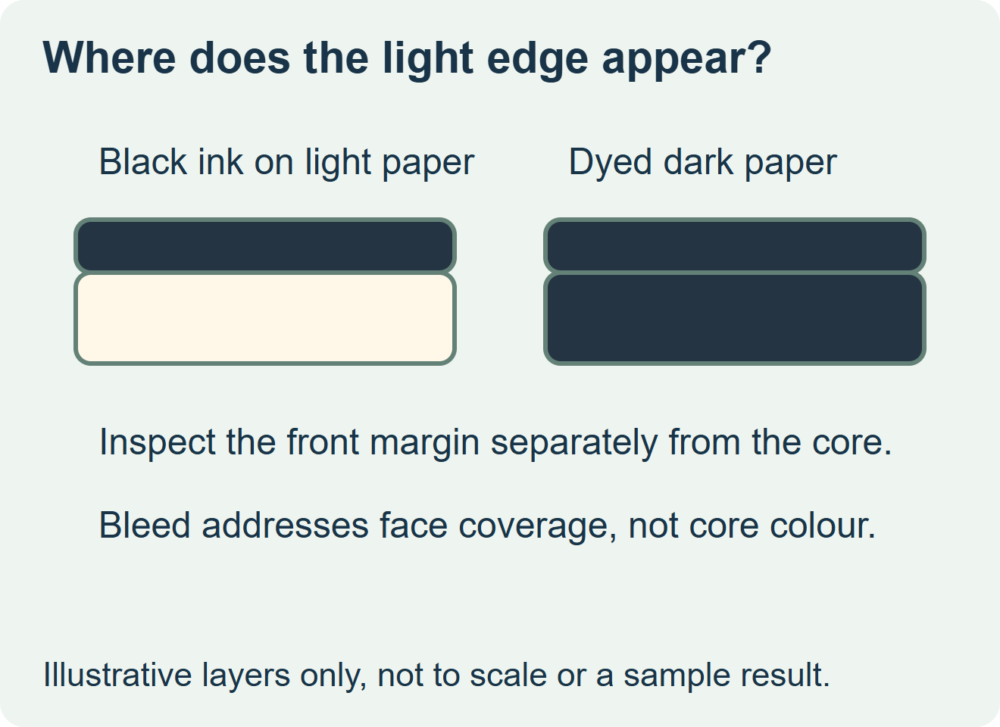
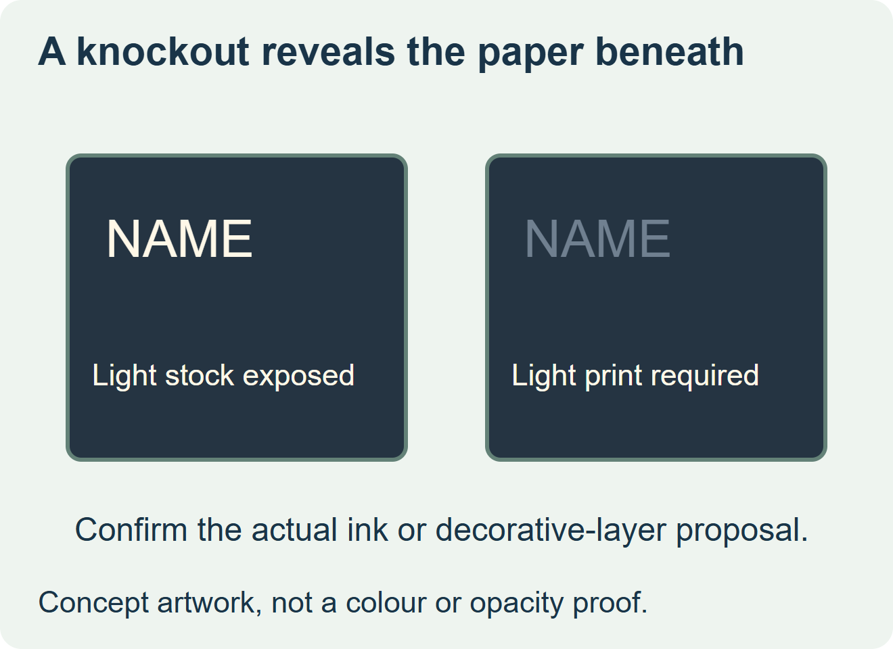

Request pulp-dyed black paper when the dark paper edge itself is part of the required appearance, then qualify the full printed construction on the actual bottle. Keep black printing on a white stock as a valid alternative when its edge, light artwork and final finish meet the brief. Compare physical converted samples; a black PDF background does not identify either material.


Separate a pale cut face from a pale unprinted margin
Look at the location of the light line. A pale area on the front near the cut may involve artwork coverage or print-to-cut variation. A pale vertical face through the paper thickness asks a different material question. Increasing the printed bleed can address coverage at the front boundary under the converter’s file requirements; it does not dye the paper core.
Fedrigoni’s Premium Black range for wine and spirits identifies facestocks dyed in the pulp. That is a specific material route to compare with applying black ink to a lighter face. Its named products and treatment claims are manufacturer-specific, not confirmation of ZFU stock, wet-use performance or certification for this order.
| Buyer requirement | White stock with a printed black field | Pulp-dyed black-stock proposal |
|---|---|---|
| Dark face and acceptable cut-edge appearance | Review black coverage, front margin and actual paper edge separately. | Review the actual dyed paper edge, surface texture and cut quality. |
| White lettering or pale detail | An unprinted knockout may reveal white stock, if supported by the design and print route. | Ask which white or other opaque print/effect supplies the light detail; a knockout reveals dark stock. |
| Metallic crest | Confirm transferred foil, metallic ink or the actual proposed effect. | Confirm that effect on this specific dark and possibly textured paper. |
| Bottle fit and later service | Qualify the full construction at the proposed footprint. | Qualify this construction independently; dark paper is not a flexibility or water-resistance specification. |


Rebuild the light artwork for the actual substrate
Mark the smallest pale word, reversed gap and metallic feature at final size. On white stock, a white-looking letter can simply be an area where the black background was not printed. The same file on black stock leaves a dark letter unless a supported light-printing or decorative operation supplies it. Ask the converter to show the proposed separations rather than change the paper name on an otherwise unexplained quotation.
For a hypothetical reserve wine, the buyer wants a dark front panel, a fine pale product name and one reflective crest. Compare both constructions with that exact design and cut outline. A demonstration showing only a large gold logo cannot approve the small pale name. If the stock or finish differs, retain the difference instead of attributing every appearance change to black ink alone.
Approve the edge, print and applied label together
Review loose converted labels and labels applied to the actual bottle under the intended light. Check the face, oblique edge view, fine copy and decorative detail. Keep any specific concern about the label corner or thickness with the specimen. A close-up of a desirable edge cannot establish dispensing or adhesion on a tight curve.
Where chilling, moisture or carton rubbing matters, evaluate the complete proposed construction through the agreed use sequence. A black core may change what is visible at a paper edge; it does not establish resistance of the print, foil or coating to damage. No universal paper weight, dye stability or minimum bottle diameter is implied here.
Ask for comparable quotes covering the actual stock, light-print layers, metallic process, protective finish, converted format and sample work. Do not assume black stock removes all background printing or that it is always more expensive. Keep the accepted sample and construction reference with the order so a later substitute is reviewed against the same edge and artwork requirement.
Discuss the unresolved label requirement
Send bottle, label footprint, physical black/texture reference, marked edge and light/metallic details, intended wet or rubbing use and quantities. Review wine and spirits label options and prepare a label specification inquiry. The contact page opens an email draft and lists email or WhatsApp for attachments. Supply, proof options, testing, pricing and timing require project confirmation.